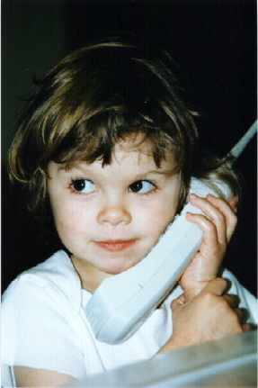
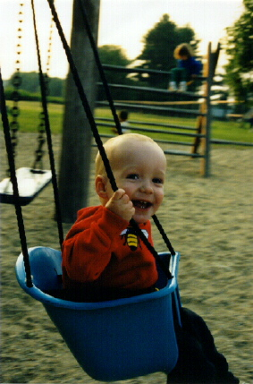
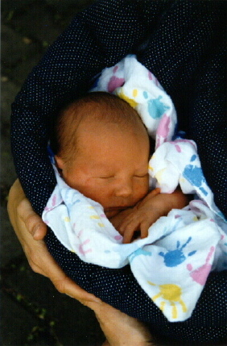
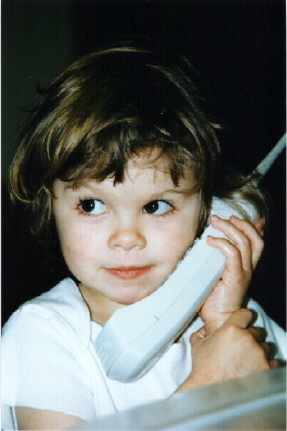
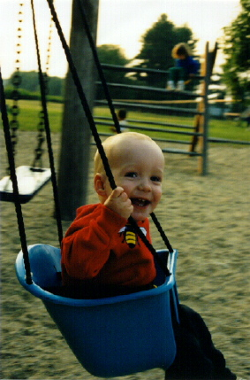

|
 |  | |||
Dear friends and family,
Years have passed since we last wrote to many of you. In fact, since our last newsletter went out, there is one more of us than there were before, and he's two years old already. Some of you have heard about him, but some of you haven't. We actually had a newsletter more or less written about a year ago, but never managed to finish it and get it mailed out. Only a few people who knew about our family website saw it.
Most parts of our lives are as they were. We still live in the same house and work at the same place. The most exciting elements of our lives, and the ones that have changed the most, are the children.
 Benjamin James Urban Shipley was born 17 May 1996 at 12:19 a.m. at Meriter Hospital in Madison, Wisconsin. He weighed 3.6 kg (8 pounds) and was 52 cm (20.5 inches) long. That's a little less than a fifth of the weight of a curling rock and a little less than twice the diameter of a curling rock.
Now he's walking and running and trying to learn how to jump. He talks a lot, and manages to get his point across more than half the time. He can be very serious, but he has a beautiful smile. He is a connoisseur of vehicles (both real and toy) and is interested in any new riding experience he can get. His life list now includes strollers, cars, bicycles, bike trailers, tricycles, wagons, sleds, buses, trains, airplanes, subways, streetcars, elevators, escalators, canoes, and ferries. With his friend Bic, he is a founding member of TEWBS, or Truck Enthusiasts With Big Sisters.
And speaking of big sisters, Rachel is now five years old. She's full of questions, some of which send us scrambling for encyclopedia, atlases, and websites. She has a passion for art projects, imaginative games, books and theatre. Rachel has a favourite babysitter who acts in a group of young people who put on Shakespearean plays, and Rachel and her dad have attended two of them--The Winter's Tale and Twelfth Night. It's amazing what children as young as seven can do with Shakespeare's language if they're well coached, and Rachel's sufficiently interested that she thinks she might want to try it in a couple of years.
Rachel is also learning to play the piano. After a false start with private lessons, we've been attending group lessons, which also include listening and singing exercises. Because parents are expected to help with practicing, daily music has become a family event. Ben particularly enjoys dancing to the "music and movement" pieces. Rachel had her first recital in March. With memories of his own childhood recitals, her dad felt pretty nervous watching her take the stage, but Rachel was nowhere near as nervous as he was, and the recital went wonderfully. Rachel's (Shipley) grandparents were delighted to have been able to be there.
Instead of sending Rachel off to full-day kindergarten this fall, we're going to try homeschooling. There are some strong local support groups for parents and kids involved in homeschooling, and many community resources available. We've been enjoying teaching and learning along with Rachel so far, so we're looking forward to doing so slightly more formally.
One thing that makes homeschooling a bit more feasible for us is our job sharing arrangement. We both still work at the Energy Center of Wisconsin, Ruth at 50% time and Dave at 70%. This probably limits our chance for advancement somewhat, but we still have the opportunity to work on some interesting projects. We both love the time we get to spend with our kids, and that is certainly the main reason we give for job sharing, but to be honest neither of us wants to go back to full-time work even after the kids leave home.
We still live in the same house, though it slowly evolves as we paint things, have rooms wallpapered, and replace various things that break. The Crestwood area continues to offer an amazingly rich neighborhood life--Ruth is now the editor of the neighborhood newsletter and Dave is secretary to the neighborhood board. This is apparently the oldest housing cooperative in the U.S., dating back to the 1920s. Careful management of proceeds from land sales over the years has provided the association with a fund whose income finances half a dozen wonderful social events each year--an egg hunt in spring, a 4th of July parade and picnic, a Halloween bonfire, and so on. When we take a walk on a summer evening, it often becomes a round of chats and visits.
Dave still curls and Ruth remains remarkably patient with this odd foible. He isn't spending enough time on the ice to get much better these days (especially in August), but he still likes it. Off the ice, he's been a major contributor to the curling club's website, posting league results every week during the season. Recently, he was asked to become secretary to the curling club board, so that's another set of minutes to get out every month.
Rachel has suggested that Ruth's hobby is housecleaning, but she's trying to prove Rachel wrong. In addition to doing the neighborhood newsletter, she was a regular in Madison (Quaker) Meeting's nursery last year. During the winter, her "hobby" was reactivating her computer skills for an intranet project at work. She's currently trying to decide how she's going to spend all of the "free" evenings she'll have coming to her during Dave's curling season--maybe music lessons?
Since the kids feel like the most newsworthy parts of our lives these days, we'll put in just a few more kid pictures. The one on the left just below was taken at our neighborhood autumn picnic, called Crestfest, in September 1996. The picture in the middle is in early December of 1996. Rachel was talking to her grandma (Shipley) on the phone. The one on the right is Ben swinging at a playground in New Hampshire on our summer vacation in 1997. Bottom left is Rachel dressing up in the basement at her Urban grandparents' house in New Hampshire in 1997. Bottom right is Rachel with her cousins Ellen (left) and Michael (right) at her Shipley grandparents' house in Ottawa. Ellen and Michael are two of Dave's brother Kevin's children.
|
 |  | |||
We now have a website of our own, so we'll be posting this newsletter there at the same time as we start mailing it out. If you're reading this on paper, you might want to check out the color pictures on the web.
Well, that's it for another year (or two?). We hope this finds you well.
love to all,
Dave, Ruth , Rachel and Ben